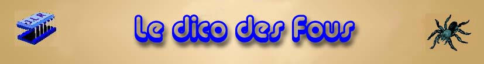

Ce Dico va (peut-être) vous permettre d´enrichir la langue française, mais beaucoup plus certainement de rigoler un bon coup !
Cette page d´intro est nécessaire pour un gag au 15eme mot.
Bon amusement